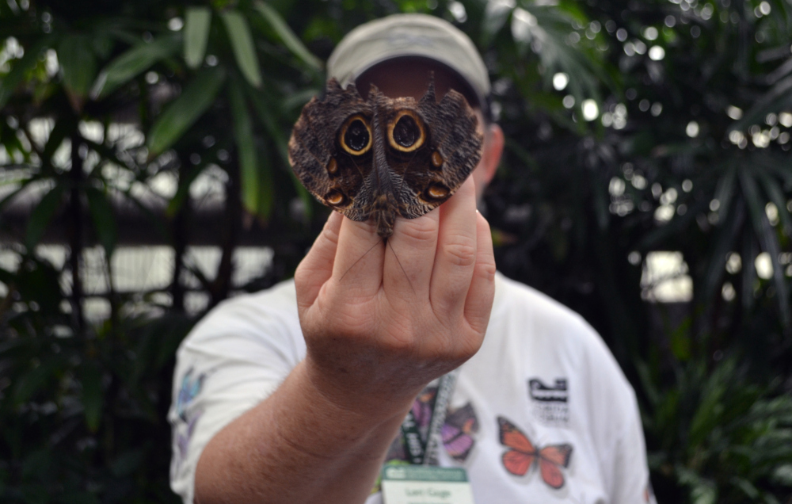
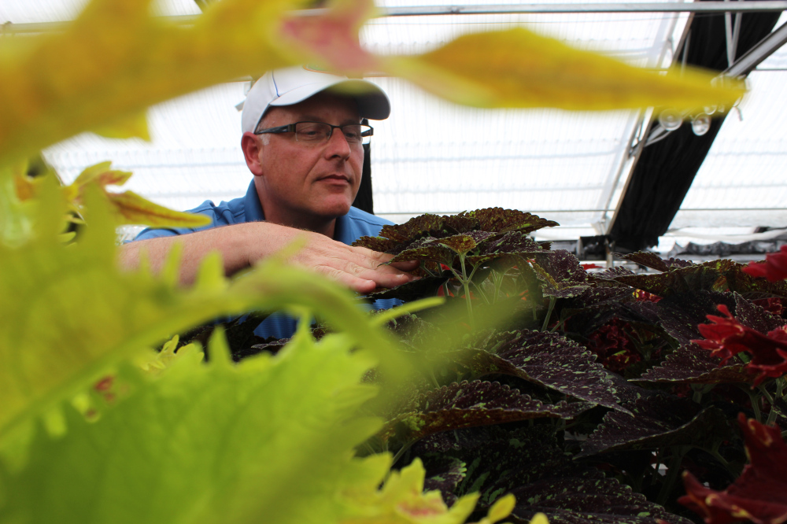

Choyce Williams, 3, of Gainesville, participates in the King Celebration Commemorative March where hundreds of people walked east on University Avenue and north on Waldo Road to the Martin Luther King Jr. Multipurpose Center for the 30th annual King Celebration.

Lori Gage, a horticulturist and Florida Museum of Natural History employee, shows off the wings of an owl butterfly, known for its owl-like appearance used for camouflage, in the museum’s Butterfly Rainforest exhibit.

David Clark, University of Florida environmental horticulture professor, inspects a coleus plant growing in the UF Institute for Plant Innovation. Each year, the program grows over 50,000 seedlings into unique strands of coleus.